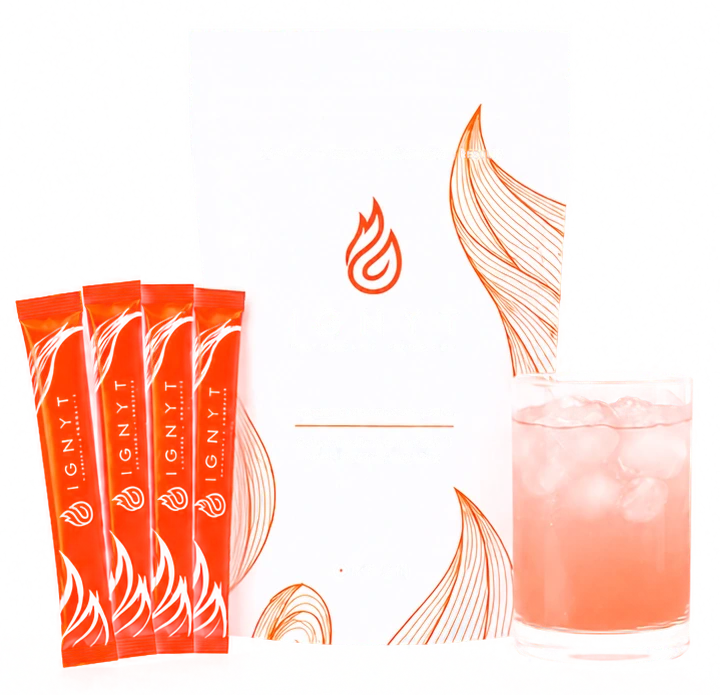

IGNYT info
If it isn't there in a few minutes, check your Spam or Promotions folder.
Questions? Text me at {{custom_values.rep_phone}} Or message me on Facebook
While you wait
IGNYT is ORYGN's powdered metabolic booster, built on patented bioactive peptides made to the ORYGN PURE standard. It supports three receptor pathways rather than one: GLP-1, GLP-2 and GIP.
It's a cran-apple drink, not a chalky shake. Most people take it cold with ice.
These statements have not been evaluated by the Food and Drug Administration. This product is not intended to diagnose, treat, cure or prevent any disease.